Основу советских бронетанковых войск составляли средние танки Т‑34 разных модификаций и тяжёлые танки серии КВ и ИС.
- Средние танки: Т‑34, Т‑34‑85.
- Тяжёлые танки: КВ‑1, КВ‑2, ИС‑2, ИС‑3.
- Самоходные установки: СУ‑76, СУ‑85, ИСУ‑122, ИСУ‑152.
США сделали ставку на массовое производство надёжных машин, прежде всего среднего танка M4 Sherman.
- Средние танки: M3 Lee/Grant, M4 Sherman (разные модификации).
- Лёгкие танки: M3 Stuart, M5 Stuart, M24 Chaffee.
- Истребители танков: M10 Wolverine, M18 Hellcat, M36 Jackson.
Немецкая бронетехника отличалась мощным вооружением и хорошей оптикой, но была сложной и дорогой в производстве.
- Средние танки: Panzer III, Panzer IV, Panther.
- Тяжёлые танки: Tiger I, Tiger II.
- Штурмовые орудия и САУ: StuG III, Jagdpanther, Jagdtiger, Hetzer.
Бронетехника Франции, Великобритании, Польши и Чехословакии времён Второй мировой войны.
- Франция: танки Renault R35, Hotchkiss H35, Somua S35, B1 bis.
- Великобритания: Matilda II, Churchill, Crusader, Cromwell, Comet.
- Польша и Чехословакия: 7TP, LT vz.35, LT vz.38 и их дальнейшее использование союзниками.
Бронетехника Венгрии, Италии и Японии, воевавших на стороне блока Оси.
- Венгрия: танки Turán I/II, лёгкие танки Toldi.
- Италия: L6/40, M13/40, САУ Semovente.
- Япония: Typ 95 Ha‑Go, Typ 97 Chi‑Ha и другие лёгкие и средние танки.
Информация о бронетехнике
Нажмите на один из разделов выше, чтобы открыть список образцов бронетехники выбранной стороны.
СОВЕТСКИЕ ТАНКИ
I. Лёгкие танки
1. МС-1 (Т-18)
.jpg)
Тип и назначение: Лёгкий пехотный танк сопровождения. Предназначался для поддержки пехоты в бою, борьбы с пулемётными гнёздами и лёгкой бронетехникой противника.
История создания: Первый серийный советский танк. Разработан на основе французского Renault FT с учётом опыта Первой мировой и Гражданской войн. Принят на вооружение в 1927 году, производился до 1931 г.
Краткие ТТХ:
- Боевая масса: 5,3 т; экипаж: 2 чел.
- Вооружение: 37‑мм пушка Гочкиса, 1 пулемёт ДТ.
- Бронирование: 6–16 мм.
- Двигатель: 35 л.с.; скорость по шоссе: 16 км/ч.
Применение: Использовался в локальных конфликтах 1930‑х гг., в начале Великой Отечественной войны — преимущественно в учебных частях и как неподвижная огневая точка.
2. Т‑26
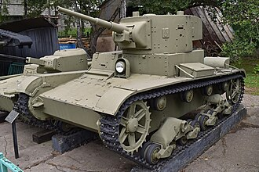
Тип и назначение: Лёгкий пехотный танк для непосредственной поддержки пехоты.
История создания: Создан на базе британского Vickers Mk E (6‑тонный), закупленного в 1930 году. Принят на вооружение в СССР в 1931 году и стал одним из первых в мире танков массового производства.
Краткие ТТХ:
- Боевая масса: ~10,5 т; экипаж: 3 чел.
- Вооружение: 45‑мм пушка 20‑К, 2 пулемёта ДТ.
- Бронирование: 6–15 мм.
- Двигатель: 90 л.с.; скорость: 30 км/ч; запас хода: ~130 км.
Применение: Активно применялся в Испании, на Халхин‑Голе, в советско‑финской войне и в начальный период Великой Отечественной. Всего выпущено около 11 тыс. единиц.
3. БТ‑7
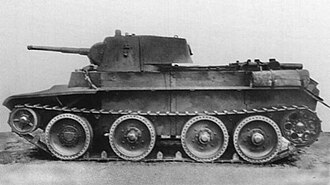
Тип и назначение: Лёгкий колёсно‑гусеничный быстроходный танк для глубоких рейдов, разведки и развития прорыва.
История создания: Развитие серии БТ («Быстроходный танк») на основе американской подвески Кристи. Серийно производился с 1935 по 1939 год.
Краткие ТТХ:
- Боевая масса: 13–14,65 т; экипаж: 3 чел.
- Вооружение: 45‑мм пушка 20‑К, 1–2 пулемёта ДТ.
- Бронирование: 6–22 мм.
- Двигатель: М‑17Т, 400 л.с.; скорость на гусеницах: 72 км/ч, на колёсах: до 86 км/ч.
Применение: Широко использовался в начальный период войны. Высокая мобильность компенсировалась слабой бронезащитой.
4. Т‑37А
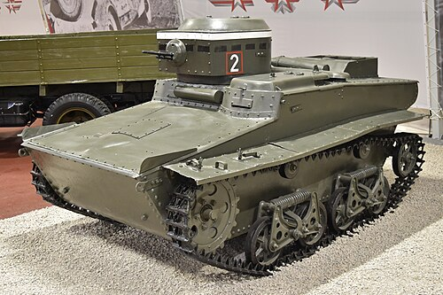
Тип и назначение: Малый плавающий танк‑разведчик — первый в мире серийный плавающий танк.
История создания: Разработан в 1932 году на основе британского Vickers‑Carden‑Loyd и отечественных опытных образцов.
Краткие ТТХ:
- Боевая масса: 3,2 т; экипаж: 2 чел.
- Вооружение: 1 пулемёт ДТ 7,62‑мм.
- Бронирование: 4–9 мм.
- Скорость на суше: 40 км/ч, на плаву: 6 км/ч.
Применение: Использовался для разведки, связи, охраны флангов. Выпущено 2552 единицы.
5. Т‑50
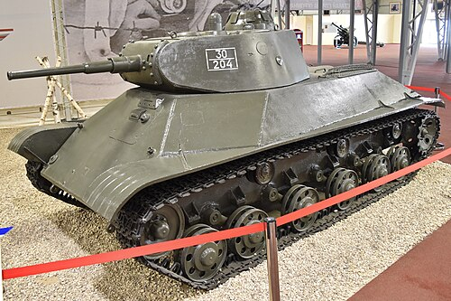
Тип и назначение: Лёгкий танк сопровождения пехоты нового поколения.
История создания: Разрабатывался с 1939 года как замена Т‑26. Отличался передовой для лёгкого танка компоновкой и бронированием.
Краткие ТТХ:
- Боевая масса: ~14 т; экипаж: 4 чел.
- Вооружение: 45‑мм пушка 20‑К.
- Бронирование: до 37 мм, рациональные углы наклона.
- Двигатель: 300 л.с.; скорость: до 60 км/ч.
Применение: Выпущен малой серией (~69 шт.) из‑за сложности производства и начала войны. Боевое применение ограничено.
6. Т‑70
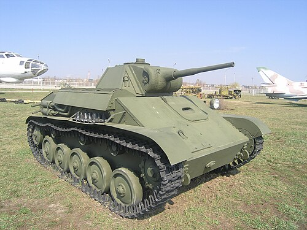
Тип и назначение: Лёгкий танк поддержки пехоты и разведки.
История создания: Разработан осенью 1941 года на ГАЗ под руководством Н.А. Астрова на базе автомобильных агрегатов.
Краткие ТТХ:
- Боевая масса: 9,2 т; экипаж: 2 чел. (позже 3).
- Вооружение: 45‑мм пушка 20‑К, пулемёт ДТ.
- Бронирование: 15–45 мм.
- Двигатель: 2×ГАЗ‑202, 140 л.с.; скорость: 45 км/ч.
Применение: Серийно производился в 1942–1943 гг. (8226 ед.). Активно использовался до середины войны, затем заменён более мощными образцами.
II. Средние танки
7. Т‑28
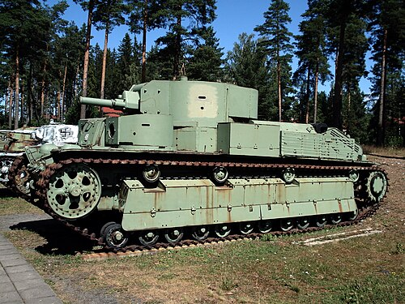
Тип и назначение: Средний многобашенный танк прорыва для поддержки пехоты при прорыве укреплённых позиций.
История создания: Разработан в начале 1930‑х под руководством С.М. Кирова. Один из первых в мире серийных средних танков.
Краткие ТТХ:
- Боевая масса: ~28 т; экипаж: 6 чел.
- Вооружение: 76‑мм пушка КТ‑28, 3 пулемёта ДТ.
- Бронирование: 20–30 мм (позже усилено).
- Двигатель: М‑17Л, 500 л.с.; скорость: 40 км/ч.
Применение: Участвовал в советско‑финской войне и начальных боях 1941 года. К 1943 году снят с фронта.
8. Т‑34‑76
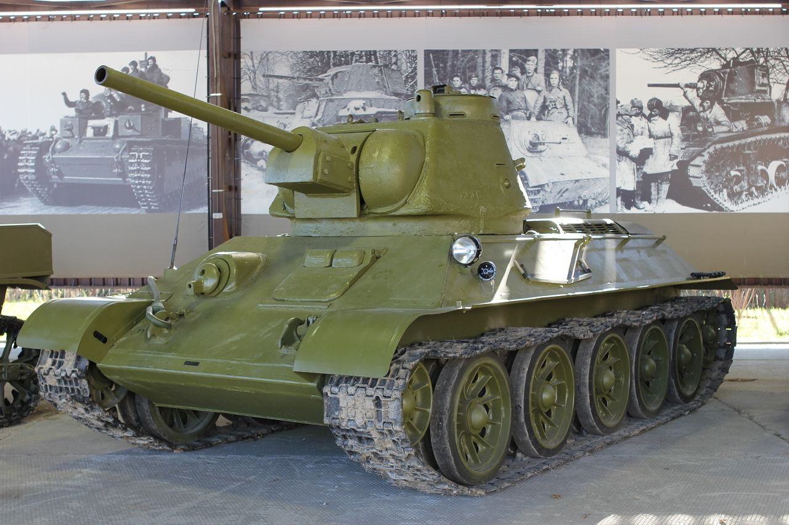
Тип и назначение: Средний танк — основной танк РККА 1941–1943 гг.
История создания: Разработан в КБ завода №183 под руководством М.И. Кошкина. Принят на вооружение в 1940 году.
Краткие ТТХ:
- Боевая масса: 26,5–28 т; экипаж: 4 чел.
- Вооружение: 76‑мм пушка Ф‑34, 2 пулемёта ДТ.
- Бронирование: 13–52 мм, рациональные углы наклона.
- Двигатель: В‑2, 500 л.с.; скорость: до 53 км/ч; запас хода: до 400 км.
Применение: Стал символом советского танкостроения. Эффективно применялся на всех фронтах, особенно после массового выпуска в 1942–1943 гг.
9. Т‑34‑57
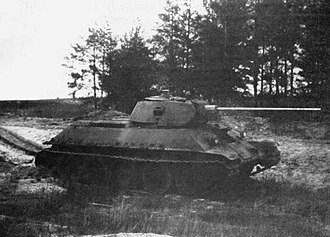
Тип и назначение: Модификация Т‑34 с усиленным противотанковым вооружением («истребитель танков»).
История создания: Разработан в 1941 году с установкой 57‑мм пушки ЗИС‑4 с высокой бронепробиваемостью.
Краткие ТТХ:
- Боевая масса: ~28 т; экипаж: 4 чел.
- Вооружение: 57‑мм пушка ЗИС‑4 (бронебойный снаряд пробивал до 90 мм брони на 1000 м).
- Остальные характеристики близки к Т‑34‑76.
Применение: Выпущен малой серией (~100 шт.). Использовался в 1941–1942 гг. против тяжёлых немецких танков; производство прекратили из‑за сложности орудия и нехватки снарядов.
10. Т‑34‑85
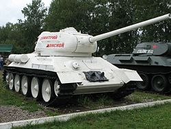
Тип и назначение: Средний танк — основной танк РККА с 1944 года.
История создания: Глубокая модернизация Т‑34 с новой трёхместной башней и 85‑мм пушкой ЗИС‑С‑53 для борьбы с «Тиграми» и «Пантерами».
Краткие ТТХ:
- Боевая масса: около 32 т; экипаж: 5 чел.
- Вооружение: 85‑мм пушка ЗИС‑С‑53, 2 пулемёта ДТ.
- Бронирование: до 90 мм (лоб башни).
- Двигатель: В‑2, 500 л.с.; скорость: до 55 км/ч.
Применение: Серийно производился с 1944 года. Основной танк завершающего этапа войны, участвовал во всех крупных наступательных операциях 1944–1945 гг.
11. Т‑44
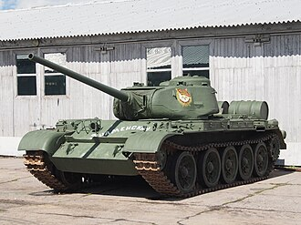
Тип и назначение: Средний танк нового поколения, переходный к послевоенным образцам.
История создания: Разработан в 1943–1944 гг. как глубокая модернизация Т‑34 с новой подвеской, поперечным расположением двигателя и улучшенной бронезащитой.
Краткие ТТХ:
- Боевая масса: ~31 т; экипаж: 4 чел.
- Вооружение: 85‑мм пушка ЗИС‑С‑53.
- Бронирование: до 120 мм (лоб).
- Двигатель: В‑44, 520 л.с.; скорость: до 60 км/ч.
Применение: Выпущен ограниченной серией (~1800 шт.), в боях Великой Отечественной войны участия не принимал, но стал основой для создания Т‑54.
III. Тяжёлые танки
12. КВ‑1

Тип и назначение: Тяжёлый танк прорыва для преодоления укреплённых полос и борьбы с тяжёлой бронетехникой противника.
История создания: Разработан в 1938–1939 гг. на Кировском заводе. Назван в честь К.Е. Ворошилова.
Краткие ТТХ:
- Боевая масса: 43–47,5 т; экипаж: 5 чел.
- Вооружение: 76‑мм пушка Ф‑32/ЗИС‑5, 3 пулемёта ДТ.
- Бронирование: до 75–90 мм.
- Двигатель: В‑2К, 600 л.с.; скорость: до 34 км/ч.
Применение: С 1941 года был практически неуязвим для большинства немецких ПТО, но страдал от ненадёжности трансмиссии. Всего выпущено 3267 единиц.
13. КВ‑2
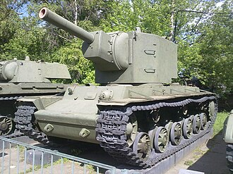
Тип и назначение: Тяжёлый штурмовой танк/САУ для разрушения ДОТов и укреплений.
История создания: Создан в 1940 году на базе КВ‑1 с установкой массивной башни и 152‑мм гаубицы М‑10.
Краткие ТТХ:
- Боевая масса: около 52 т; экипаж: 6 чел.
- Вооружение: 152‑мм гаубица М‑10.
- Бронирование: до 75 мм.
- Скорость: до 30 км/ч.
Применение: Эффективен при штурме укреплений в 1941 году, но из‑за огромной массы и уязвимости выпущен малой серией (~334 шт.).
14. КВ‑1С

Тип и назначение: Облегчённая модификация КВ‑1 с улучшенной подвижностью («С» — скоростной).
История создания: Разработан в 1942 году путём облегчения брони и доработки трансмиссии.
Краткие ТТХ:
- Боевая масса: ~42,5 т; экипаж: 5 чел.
- Вооружение: 76‑мм пушка ЗИС‑5.
- Бронирование: до 60–75 мм.
- Двигатель: В‑2К, 600 л.с.; скорость: до 42 км/ч.
Применение: Производился в 1942–1943 гг. и стал переходной моделью к танкам серии ИС.
15. ИС‑1 (ИС‑85)
.jpg)
Тип и назначение: Тяжёлый танк прорыва.
История создания: Разработан в 1943 году на базе КВ‑13 в ответ на появление немецких «Тигров». Первый танк серии «Иосиф Сталин».
Краткие ТТХ:
- Боевая масса: ~44 т; экипаж: 4 чел.
- Вооружение: 85‑мм пушка Д‑5Т.
- Бронирование: до 120 мм (лоб).
- Двигатель: В‑2ИС, 520 л.с.; скорость: до 37 км/ч.
Применение: Выпущен малой серией (~130 шт.) в конце 1943 года, вскоре заменён ИС‑2.
16. ИС‑2
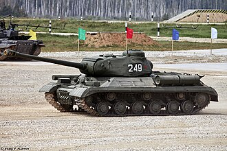
Тип и назначение: Основной тяжёлый танк прорыва РККА 1944–1945 гг.
История создания: Принят на вооружение в 1943 году с установкой 122‑мм пушки Д‑25Т.
Краткие ТТХ:
- Боевая масса: около 46 т; экипаж: 4 чел.
- Вооружение: 122‑мм пушка Д‑25Т, 3 пулемёта ДТ.
- Бронирование: до 120 мм, рациональные углы наклона.
- Двигатель: В‑2ИС, 520 л.с.; скорость: до 37 км/ч.
Применение: Массово применялся при прорыве укреплённых районов и в городских боях. Выпущено около 3800 единиц.
17. ИС‑3
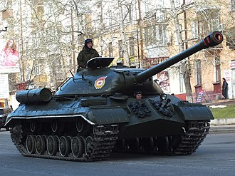
Тип и назначение: Тяжёлый танк послевоенного поколения с «щучьим носом».
История создания: Разработан в 1944–1945 гг. с новой формой лба корпуса и полусферической башней.
Краткие ТТХ:
- Боевая масса: около 46,5 т; экипаж: 4 чел.
- Вооружение: 122‑мм пушка Д‑25Т.
- Бронирование: до 220 мм (лоб корпуса).
- Двигатель: В‑11, 520 л.с.; скорость: до 40 км/ч.
Применение: Не успел принять участие в боях, но был продемонстрирован на Параде Победы в Берлине, произвёл сильное впечатление на союзников.
IV. Самоходные артиллерийские установки
18. СУ‑122
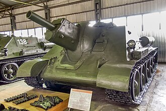
Тип и назначение: Средняя штурмовая САУ для огневой поддержки танков и пехоты при прорыве обороны.
История создания: Разработана в 1942 году на базе Т‑34 с установкой 122‑мм гаубицы М‑30.
Краткие ТТХ:
- Боевая масса: около 30,9 т; экипаж: 5 чел.
- Вооружение: 122‑мм гаубица М‑30.
- Бронирование: до 45 мм.
- Скорость: до 50 км/ч.
Применение: Производилась в 1942–1943 гг. (~638 шт.), использовалась под Сталинградом и на Курской дуге.
19. СУ‑85
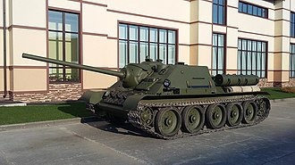
Тип и назначение: Средняя противотанковая САУ.
История создания: Создана в 1943 году на базе Т‑34 и СУ‑122 для борьбы с новыми немецкими танками.
Краткие ТТХ:
- Боевая масса: 29,6 т; экипаж: 4 чел.
- Вооружение: 85‑мм пушка Д‑5С.
- Бронирование: до 45 мм.
- Скорость: до 48 км/ч.
Применение: Активно применялась с осени 1943 года. Выпущено 2335 единиц, позже заменена СУ‑100 и Т‑34‑85.
20. СУ‑100
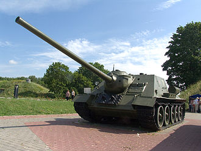
Тип и назначение: Средняя САУ — один из лучших советских истребителей танков.
История создания: Разработана в 1944 году на базе Т‑34 с установкой 100‑мм пушки Д‑10С.
Краткие ТТХ:
- Боевая масса: 31,6 т; экипаж: 4 чел.
- Вооружение: 100‑мм пушка Д‑10С.
- Бронирование: до 75 мм (лоб рубки).
- Скорость: до 50 км/ч.
Применение: С конца 1944 года успешно поражала все типы немецких танков.
21. СУ‑152
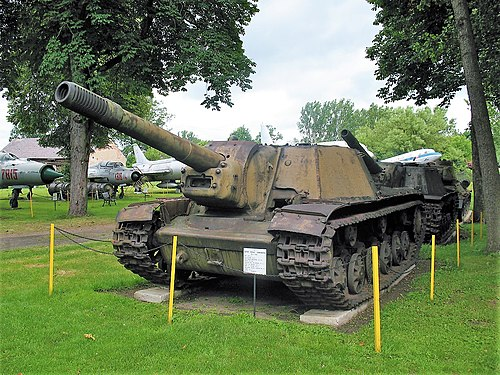
Тип и назначение: Тяжёлая штурмовая САУ.
История создания: Создана в 1943 году на базе КВ‑1С с установкой 152‑мм гаубицы‑пушки МЛ‑20С.
Краткие ТТХ:
- Боевая масса: около 45,5 т; экипаж: 5 чел.
- Вооружение: 152‑мм гаубица‑пушка МЛ‑20С.
- Бронирование: до 75 мм.
- Скорость: до 43 км/ч.
Применение: Боевое крещение получила на Курской дуге, где получила прозвище «Зверобой» за способность уничтожать тяжёлые немецкие машины.
22. ИСУ‑152
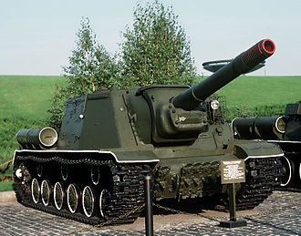
Тип и назначение: Тяжёлая универсальная САУ (штурмовое орудие/истребитель танков).
История создания: Разработана в 1943 году на базе шасси ИС с сохранением орудия МЛ‑20С от СУ‑152.
Краткие ТТХ:
- Боевая масса: около 46 т; экипаж: 5 чел.
- Вооружение: 152‑мм гаубица‑пушка МЛ‑20С.
- Бронирование: до 90–120 мм.
- Скорость: до 37 км/ч.
Применение: Широко применялась на завершающем этапе войны для штурма городов и борьбы с тяжёлой бронетехникой.
23. ИСУ‑122
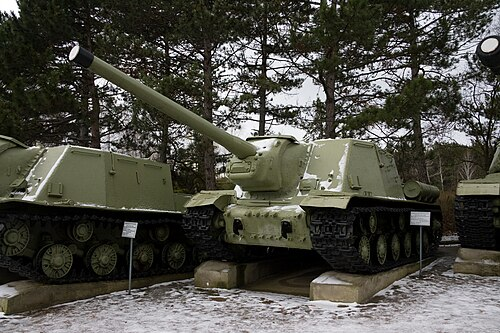
Тип и назначение: Тяжёлая САУ — истребитель танков/штурмовое орудие.
История создания: Вариант ИСУ‑152 с заменой 152‑мм гаубицы на 122‑мм пушку А‑19/Д‑25С для улучшения противотанковых качеств.
Краткие ТТХ:
- Боевая масса: около 46 т; экипаж: 5 чел.
- Вооружение: 122‑мм пушка А‑19/Д‑25С.
- Бронирование: до 90–120 мм.
- Скорость: до 37 км/ч.
Применение: Эффективно использовалась в 1944–1945 гг. против укреплений и тяжёлых танков противника.
НЕМЕЦКИЕ ТАНКИ
I. Лёгкие танки
1. Panzerkampfwagen I

Тип и назначение: Лёгкий учебно‑боевой танк и машина поддержки пехоты.
История создания: Разработан в 1932–1934 гг. фирмами Krupp, Henschel и Daimler‑Benz. Первый серийный танк Германии в нацистский период.
- Боевая масса: 5,4 т; экипаж: 2 чел.
- Вооружение: 2×7,92‑мм пулемёта MG‑13/MG‑34.
- Бронирование: 7–13 мм.
- Двигатель: 57 л.с.; скорость: до 37 км/ч.
Применение: Испания, Польша, Франция, СССР (1941). К 1942 г. снят с фронта, использовался как база для САУ.
2. Panzerkampfwagen II

Тип и назначение: Лёгкий танк разведки и поддержки пехоты.
История создания: Разработан в 1934–1935 гг. как временное решение до появления Pz.III и Pz.IV, производился до 1942 г.
- Боевая масса: 8,9–9,5 т; экипаж: 3 чел.
- Вооружение: 20‑мм пушка KwK 30/38, 1 пулемёт MG‑34.
- Бронирование: 5–30 мм (позже до 35 мм).
- Двигатель: 140 л.с.; скорость: до 40 км/ч.
Применение: Польша, Франция, Балканы, СССР (1941–1942). Позже — база для САУ Marder II, Wespe.
3–4. Pz.Kpfw. 38(t)
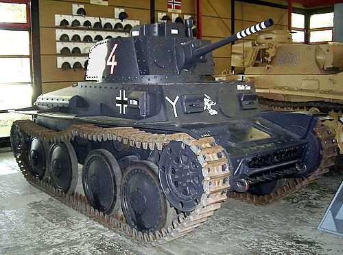
Тип и назначение: Лёгкие танки чехословацкого производства, принятые на вооружение вермахта.
История создания: LT vz.35 и LT vz.38, разработанные Škoda и ČKD, после аннексии Чехословакии получили обозначения Pz.Kpfw. 35(t) и 38(t).
- Масса: около 10 т; экипаж: 4 чел.
- Вооружение: 37‑мм пушки и пулемёты.
- Броня: до 25–50 мм (поздние варианты).
Применение: Польша, Франция, Балканы, начало войны с СССР; шасси 38(t) стало базой для САУ Marder III, Hetzer и др.
II. Средние танки
5. Panzerkampfwagen III

Тип и назначение: Средний танк — основной танк вермахта 1939–1942 гг., предназначенный для борьбы с вражескими танками.
- Боевая масса: 20–23 т; экипаж: 5 чел.
- Вооружение: 37‑мм, позже 50‑мм и 75‑мм пушки.
- Бронирование: до 70 мм.
- Двигатель: 300 л.с.; скорость: до 40 км/ч.
Применение: Польша, Франция, Балканы, СССР и Северная Африка; позже шасси использовалось для StuG III.
6. Panzerkampfwagen IV

Тип и назначение: Средний танк огневой поддержки, затем основной средний танк вермахта.
- Боевая масса: 18–25 т; экипаж: 5 чел.
- Вооружение: 75‑мм пушки KwK 37/40.
- Бронирование: до 80 мм (с экранами).
- Двигатель: 300 л.с.; скорость: до 38–40 км/ч.
Применение: Единственный немецкий танк, серийно выпускавшийся с 1936 по 1945 гг. (~8500 ед.), «рабочая лошадка» панцерваффе на всех фронтах.
7. Panzerkampfwagen V «Panther»

Тип и назначение: Средний танк нового поколения, созданный как ответ на Т‑34 и КВ‑1.
- Боевая масса: 44,8–46,2 т; экипаж: 5 чел.
- Вооружение: 75‑мм пушка KwK 42 L/70.
- Бронирование: до 100 мм, рациональные углы.
- Двигатель: 700 л.с.; скорость: до 46 км/ч.
Применение: Впервые использовалась на Курской дуге; считается одним из лучших танков войны по балансу характеристик (около 6000 ед.).
III. Тяжёлые и сверхтяжёлые танки
8. Tiger I

Тип и назначение: Тяжёлый танк прорыва для уничтожения танков и укреплений.
- Боевая масса: 54–57 т; экипаж: 5 чел.
- Вооружение: 88‑мм пушка KwK 36 L/56.
- Броня: до 100 мм.
- Двигатель: 700 л.с.; скорость: до 38 км/ч.
Применение: С 1942 года на всех фронтах; высокая боевая эффективность сочеталась с высокой стоимостью и сложностью обслуживания (1347 ед.).
9. Tiger II («Königstiger»)
.jpg)
Тип и назначение: Сверхтяжёлый танк прорыва — развитие Tiger I.
- Боевая масса: 68,5–70 т; экипаж: 5 чел.
- Вооружение: 88‑мм пушка KwK 43 L/71.
- Броня: до 185 мм.
- Двигатель: 700 л.с.; скорость: до 35 км/ч.
Применение: С 1944 года в основном в оборонительных боях; отличался мощью и крайне низкой надёжностью (около 490 ед.).
10. Panzerkampfwagen VIII «Maus»

Тип и назначение: Сверхтяжёлый экспериментальный танк‑«крепость» для прорыва укреплённых районов.
- Боевая масса: около 188 т; экипаж: 6 чел.
- Вооружение: 128‑мм пушка + 75‑мм спаренная пушка.
- Броня: до 240 мм.
Применение: Построено 2 опытных образца, в бою не использовался; один экземпляр сохранился как музейный.
IV. Самоходные артиллерийские установки
StuH 42

Тип и назначение: Штурмовая самоходная гаубица на базе StuG III для поддержки пехоты.
История создания: Появилась в 1942 г. как вариант StuG III с 105‑мм гаубицей leFH 18/40 для поражения пехоты и укреплений.
Краткие ТТХ:
- Боевая масса: около 24 т; экипаж: 4 чел.
- Вооружение: 105‑мм гаубица StuH 42 L/28.
- Броня: до 80 мм (лоб рубки).
- Скорость: до 40 км/ч.
Применение: Использовалась на всех фронтах для штурма опорных пунктов и огневой поддержки частей пехоты и танковых дивизий.
StuG IV

Тип и назначение: Штурмовое орудие и истребитель танков на шасси Pz.IV.
История создания: Создан в 1943 г. фирмой Krupp как замена StuG III при перегрузке завода Alkett.
Краткие ТТХ:
- Боевая масса: около 23 т; экипаж: 4 чел.
- Вооружение: 75‑мм пушка StuK 40 L/48.
- Броня: до 80 мм с экранами.
- Скорость: до 38 км/ч.
Применение: Применялся в 1944–1945 гг. как универсальное средство поддержки и ПТ‑обороны, показал высокую эффективность при засадной тактике.
Jagdpanzer 38 «Hetzer»
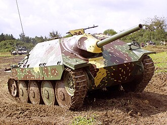
Тип и назначение: Лёгкая противотанковая САУ.
История создания: Разработана в 1943–1944 гг. фирмой BMM на шасси Pz.Kpfw. 38(t) как компактный и хорошо бронированный истребитель танков.
Краткие ТТХ:
- Боевая масса: ~15,7 т; экипаж: 4 чел.
- Вооружение: 75‑мм пушка PaK 39 L/48.
- Броня: до 60 мм под рациональными углами.
- Скорость: до 40 км/ч.
Применение: Широко использовалась на Восточном и Западном фронтах, отличалась малой заметностью и эффективностью в оборонительных боях.
Ferdinand / Elefant
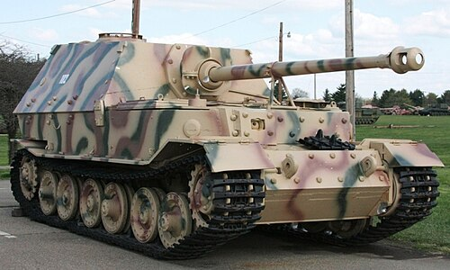
Тип и назначение: Тяжёлая противотанковая САУ.
История создания: Построена в 1943 г. на базе неиспользованных шасси Porsche Tiger с установкой 88‑мм пушки PaK 43/2; после доработки получила имя «Elefant».
Краткие ТТХ:
- Боевая масса: 65–70 т; экипаж: 6 чел.
- Вооружение: 88‑мм пушка PaK 43/2 L/71.
- Броня: лоб рубки до 200 мм.
- Скорость: около 30 км/ч.
Применение: Впервые применялся на Курской дуге; при грамотном использовании был крайне опасен для танков противника, но страдал от низкой надёжности и слабой защиты пехотой.
Jagdpanther
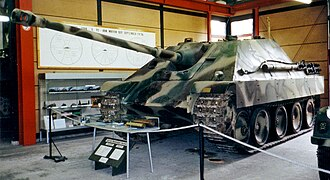
Тип и назначение: Средняя противотанковая САУ на шасси Panther.
История создания: Разработана в 1943 г. как сочетание мощной пушки PaK 43 и надёжного шасси Panther.
Краткие ТТХ:
- Боевая масса: около 45,5 т; экипаж: 5 чел.
- Вооружение: 88‑мм пушка PaK 43/3 L/71.
- Броня: до 100 мм под наклоном.
- Скорость: до 46 км/ч.
Применение: Считалась одной из лучших ПТ‑САУ войны, успешно действовала на Западном и Восточном фронтах в 1944–1945 гг.
Jagdtiger
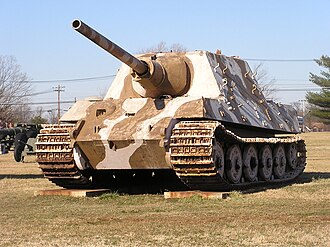
Тип и назначение: Сверхтяжёлая противотанковая САУ на базе Tiger II.
История создания: Разработана фирмой Nibelungenwerk в 1943–1944 гг. с 128‑мм пушкой PaK 44 для борьбы с тяжёлой бронетехникой на больших дистанциях.
Краткие ТТХ:
- Боевая масса: 71–76 т; экипаж: 6 чел.
- Вооружение: 128‑мм пушка PaK 44 L/55.
- Броня: до 250 мм (лоб рубки).
- Скорость: до 34 км/ч.
Применение: Небольшое количество машин участвовало в боях 1944–1945 гг.; огневая мощь была огромной, но надёжность и мобильность крайне низкими.
Marder III

Тип и назначение: Лёгкая противотанковая САУ.
История создания: Построена в 1942–1943 гг. на шасси Pz.Kpfw. 38(t) с установкой трофейных советских 76,2‑мм орудий и немецких 75‑мм пушек PaK 40.
Краткие ТТХ:
- Боевая масса: 10,8–11 т; экипаж: 4 чел.
- Вооружение: 75‑мм пушка PaK 40 или 76,2‑мм PaK 36(r).
- Броня: до 50 мм, открытая рубка.
- Скорость: до 40 км/ч.
Применение: Применялась главным образом на Восточном фронте как мобильное ПТ‑средство, однако была уязвима для осколков и огня с воздуха.
АМЕРИКАНСКИЕ ТАНКИ
I. Лёгкие танки
1. M3/M5 Stuart

Тип и назначение: Лёгкий танк разведки и поддержки пехоты.
- Боевая масса: 14,7–15,5 т; экипаж: 4 чел.
- Вооружение: 37‑мм пушка M6, 3–5 пулемётов Browning.
- Броня: 13–44 мм.
- Скорость: до 58 км/ч.
Применение: Северная Африка, Европа, Тихий океан; активно поставлялся союзникам, в том числе в СССР.
2. M24 Chaffee

Тип и назначение: Лёгкий разведывательный танк нового поколения.
- Боевая масса: 18,4 т; экипаж: 4 чел.
- Вооружение: 75‑мм пушка M6.
- Броня: 13–25 мм.
- Скорость: до 56 км/ч.
Применение: С конца 1944 г. в Европе, позднее — в Корее.
3. M22 Locust

Тип и назначение: Авиадесантный лёгкий танк.
- Боевая масса: около 7,4 т; экипаж: 3 чел.
- Вооружение: 37‑мм пушка M6.
Применение: Ограниченно использовался британцами в операции «Varsity».
II. Средние и тяжёлые танки
4. M3 Lee/Grant

Тип и назначение: Средний танк поддержки пехоты, переходная модель к M4.
- Боевая масса: 27–28 т; экипаж: 6–7 чел.
- Вооружение: 75‑мм пушка в спонсоне и 37‑мм пушка в башне.
- Броня: до 51 мм.
Применение: Северная Африка, СССР (по ленд‑лизу), к 1943 г. заменён Sherman.
5. M4 Sherman

Тип и назначение: Основной средний танк армии США и союзников.
- Боевая масса: 30–38 т; экипаж: 5 чел.
- Вооружение: 75‑мм, 76‑мм или 105‑мм орудие в зависимости от модификации.
- Броня: до 76 мм (больше с навесной бронёй).
Применение: Все театры военных действий; около 49 000 выпущенных машин.
6. M26 Pershing

Тип и назначение: Тяжёлый (позже средний) танк прорыва и борьбы с тяжёлой бронетехникой противника.
- Боевая масса: около 41,7 т; экипаж: 5 чел.
- Вооружение: 90‑мм пушка M3.
- Броня: до 102 мм.
Применение: Появился в Европе в начале 1945 г., успел принять участие в боях в Германии.
III. САУ и истребители танков
M10 Wolverine
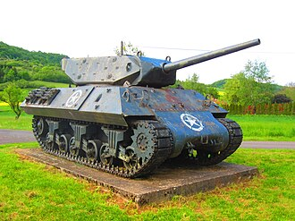
Тип и назначение: Противотанковая САУ (истребитель танков).
История создания: Разработана в 1942 г. на базе шасси M4A2 с 3‑дюймовой пушкой M7 в открытой башне; в британской армии получила название «Wolverine».
Краткие ТТХ:
- Боевая масса: около 30 т; экипаж: 5 чел.
- Вооружение: 3‑дюймовая (76,2‑мм) пушка M7 и пулемёт 12,7‑мм.
- Броня: 13–57 мм, открытая башня.
- Скорость: до 48 км/ч.
Применение: Использовалась в Северной Африке, Италии и Западной Европе, а также поставлялась в Великобританию и СССР по ленд‑лизу.
M18 Hellcat

Тип и назначение: Высокоскоростной истребитель танков.
История создания: Создан фирмой Buick как лёгкая и очень быстрая САУ с 76‑мм пушкой для тактики «выстрелил‑и‑отошёл».
Краткие ТТХ:
- Боевая масса: ~17,7 т; экипаж: 5 чел.
- Вооружение: 76‑мм пушка M1 и пулемёт 12,7‑мм.
- Броня: 7–25 мм.
- Скорость: до 88 км/ч по шоссе.
Применение: С 1944 г. применялась в Европе, особенно эффективно действуя из засад благодаря высокой подвижности.
M36 Jackson

Тип и назначение: Тяжёлый истребитель танков для борьбы с «Тиграми» и «Пантерами».
История создания: Разработан в 1944 г. путём установки 90‑мм пушки M3 в новую открытую башню на шасси M10.
Краткие ТТХ:
- Боевая масса: 28–30 т; экипаж: 5 чел.
- Вооружение: 90‑мм пушка M3 и пулемёт 12,7‑мм.
- Броня: 13–57 мм.
- Скорость: 40–48 км/ч.
Применение: Появился в Европе осенью 1944 г.; его 90‑мм орудие уверенно поражало тяжёлые немецкие танки на средних дистанциях.
M7 Priest

Тип и назначение: Самоходная гаубица для мобильной артиллерийской поддержки.
История создания: Разработана в 1942 г. на базе шасси M3 Lee/M4 Sherman с установкой 105‑мм гаубицы и характерной командирской турелью, за которую британцы прозвали машину «Priest».
Краткие ТТХ:
- Боевая масса: около 23 т; экипаж: 6–7 чел.
- Вооружение: 105‑мм гаубица M1/M2 и пулемёт 12,7‑мм.
- Броня: 13–57 мм.
- Скорость: около 40 км/ч.
Применение: Широко использовалась в Северной Африке, Италии, Нормандии и на Тихом океане как основное средство полевой артиллерии механизированных частей.
M8 Scott

Тип и назначение: Лёгкая самоходная гаубица.
История создания: Построена на шасси лёгкого танка M5 Stuart с 75‑мм гаубицей в открытой башне.
Краткие ТТХ:
- Боевая масса: около 14,7 т; экипаж: 4 чел.
- Вооружение: 75‑мм гаубица M2/M3 и пулемёт 7,62‑мм.
- Броня: 13–44 мм.
- Скорость: до 58 км/ч.
Применение: Использовалась в Европе и на Тихом океане для огневой поддержки разведывательных и кавалерийских подразделений.
M12 GMC

Тип и назначение: Самоходная тяжёлая пушка для разрушения укреплений и контрбатарейной борьбы.
История создания: Разработана в 1942 г. на удлинённом шасси M3 Lee с установкой французской 155‑мм пушки GPF.
Краткие ТТХ:
- Боевая масса: около 26 т; экипаж: 6 чел.
- Вооружение: 155‑мм пушка M1917/M1918 GPF и пулемёт 12,7‑мм.
- Броня: 13–51 мм, открытая сзади рубка.
- Скорость: около 38 км/ч.
Применение: Ограниченное количество машин применялось в Европе в 1944–1945 гг., успешно разрушая укрепления «Линии Зигфрида» и другие долговременные фортификации.
ТАНКИ СОЮЗНИКОВ (Великобритания и Франция)
Великобритания: лёгкие, крейсерские и пехотные танки
Среди британских машин выделялись лёгкие танки Light Tank Mk VI, Tetrarch, Harry Hopkins; пехотный танк Valentine; крейсерские танки Crusader, Cromwell, Comet; тяжёлый пехотный танк Churchill, а также специальные машины Challenger, Tortoise, Alecto и САУ Archer, Sexton.

Тип и назначение: Пехотный танк поддержки пехоты с хорошей бронёй и невысокой скоростью.
История создания: Разработан фирмой Vickers‑Armstrongs, принят на вооружение в 1940 г., один из самых массовых британских танков.
Краткие ТТХ:
- Боевая масса: 16–17 т; экипаж: 3–4 чел.
- Вооружение: 40‑мм, позже 57‑мм и 75‑мм пушки (в зависимости от модификации).
- Броня: до 65 мм.
- Максимальная скорость: около 24 км/ч.
Применение: Активно применялся в Северной Африке, Италии и СССР (по ленд‑лизу), ценился за надёжность и низкий силуэт.

Тип и назначение: Крейсерский танк для быстрых рейдов, охвата флангов и разведки.
История создания: Разработан компанией Nuffield, основной крейсерский танк 8‑й армии в Северной Африке в 1941–1942 гг.
Краткие ТТХ:
- Боевая масса: 19–20 т; экипаж: 4–5 чел.
- Вооружение: 40‑мм, затем 57‑мм пушка.
- Броня: до 49 мм.
- Скорость: до 43 км/ч.
Применение: Участвовал в боях пустынной кампании, позже сменён более современными Sherman и Cromwell.
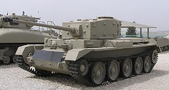
Тип и назначение: Быстрый крейсерский танк для развития прорыва и манёвренных операций.
История создания: Создан в рамках программы A27 с использованием двигателя Rolls‑Royce Meteor, принят на вооружение в 1943 г.
Краткие ТТХ:
- Боевая масса: около 28 т; экипаж: 5 чел.
- Вооружение: 75‑мм пушка QF 75mm.
- Броня: до 76 мм.
- Скорость: до 64 км/ч.
Применение: Широко применялся в Нормандии и при освобождении Европы, сочетая высокую скорость с приемлемой защитой.
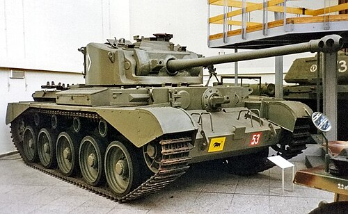
Тип и назначение: Крейсерский танк нового поколения с усиленным противотанковым вооружением.
История создания: Развитие Cromwell с 77‑мм пушкой HV (упрощённая 17‑фунтовка) для борьбы с Panther и Tiger.
Краткие ТТХ:
- Боевая масса: около 33,5 т; экипаж: 5 чел.
- Вооружение: 77‑мм пушка QF 77mm HV.
- Броня: до 102 мм.
- Скорость: до 51 км/ч.
Применение: Поступил в войска в 1945 г., участвовал в заключительных боях в Европе и стал одним из предшественников танка Centurion.
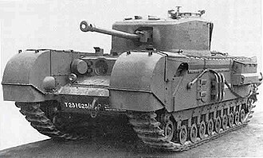
Тип и назначение: Тяжёлый пехотный танк прорыва с отличной проходимостью.
История создания: Разработан по проекту A22 для действий на сильно пересечённой местности; в ходе войны многократно модернизировался.
Краткие ТТХ:
- Боевая масса: 39–40 т; экипаж: 5 чел.
- Вооружение: на поздних модификациях 75‑мм пушка QF 75mm.
- Броня: до 152 мм (лоб поздних вариантов).
- Скорость: 20–26 км/ч.
Применение: Использовался в Тунисе, Италии, Нормандии и Северо‑Западной Европе, особенно эффективен при штурме укреплённых позиций.
Франция: лёгкие, средние и тяжёлые танки
Французская бронетехника представлена лёгкими танками и разведмашинами Renault FT‑17, Renault R35, Hotchkiss H35/H39, AMR 33/35, FCM 36; средними и кавалерийскими танками SOMUA S35, Renault D2, AMC 35; тяжёлыми машинами Char B1 bis, Char 2C и послевоенным ARL 44, а также экспериментальными САУ Laffly W15 TCC, ARL 40, Renault UE2‑47 и Renault FT BS.

Тип и назначение: Лёгкий танк сопровождения пехоты — классический ранний танк с башней.
История создания: Разработан в 1916–1917 гг.; к 1940 году считался устаревшим, но продолжал использоваться из‑за большого количества.
Краткие ТТХ:
- Боевая масса: 6,5–7 т; экипаж: 2 чел.
- Вооружение: 37‑мм пушка SA 18 или пулемёт.
- Броня: до 22 мм.
- Скорость: 7–8 км/ч.
Применение: Использовался Францией и рядом стран в 1939–1940 гг., но уступал более современным танкам.

Тип и назначение: Лёгкий пехотный танк непосредственной поддержки пехоты.
История создания: Создан в середине 1930‑х как замена FT‑17 и стал самым распространённым французским танком к 1940 г.
Краткие ТТХ:
- Боевая масса: около 10,6 т; экипаж: 2 чел.
- Вооружение: 37‑мм пушка SA 18/SA 38 и пулемёт.
- Броня: до 40 мм.
- Скорость: до 20 км/ч.
Применение: Участвовал в боях 1940 г., часть машин использовалась Германией и её союзниками.
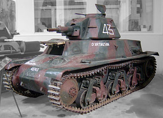
Тип и назначение: Лёгкий кавалерийский/пехотный танк.
История создания: Разработан фирмой Hotchkiss; модернизированные варианты H38/H39 имели более мощный двигатель и пушку.
Краткие ТТХ:
- Боевая масса: около 12 т; экипаж: 2 чел.
- Вооружение: 37‑мм пушка и пулемёт.
- Броня: до 40 мм.
- Скорость: до 36 км/ч.
Применение: Использовался во французской армии и после её поражения — частично в вермахте.

Тип и назначение: Кавалерийский средний танк, один из самых совершенных танков 1940 года.
История создания: Разработан фирмой SOMUA для механизированных кавалерийских дивизий, сочетал мощную 47‑мм пушку и толстую броню.
Краткие ТТХ:
- Боевая масса: 19,5–20 т; экипаж: 3 чел.
- Вооружение: 47‑мм пушка SA 35 и пулемёт.
- Броня: до 55 мм.
- Скорость: до 40 км/ч.
Применение: Эффективно сражался против немецких танков в кампании 1940 г., но пострадал от организационных проблем французской армии.

Тип и назначение: Тяжёлый танк прорыва с двумя орудиями.
История создания: Разрабатывался с 1920‑х годов; версия B1 bis получила усиленную броню и более мощную 47‑мм пушку в башне.
Краткие ТТХ:
- Боевая масса: около 31,5 т; экипаж: 4 чел.
- Вооружение: 75‑мм гаубица в корпусе и 47‑мм пушка в башне.
- Броня: до 60–75 мм.
- Скорость: до 28 км/ч.
Применение: В отдельных боях превосходил немецкие танки, но был малочислен и сложен в обслуживании.

Тип и назначение: Сверхтяжёлый танк‑«крепость» межвоенного периода.
История создания: Построен в начале 1920‑х годов небольшой серией (10 машин); к 1940 г. был морально устаревшим.
Краткие ТТХ:
- Боевая масса: 69–72 т; экипаж: до 12 чел.
- Вооружение: 75‑мм пушка и несколько пулемётов.
- Броня: до 45 мм.
- Скорость: до 15 км/ч.
Применение: Использовался в основном как средство пропаганды; при отступлении 1940 г. машины были уничтожены экипажами.
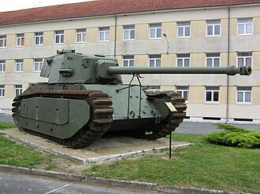
Тип и назначение: Тяжёлый послевоенный танк, ставший переходной моделью к современным французским машинам.
История создания: Разрабатывался в подполье во время оккупации, после войны был достроен с использованием трофейных немецких агрегатов.
Краткие ТТХ:
- Боевая масса: около 48 т; экипаж: 5 чел.
- Вооружение: 90‑мм пушка DCA 45/SA 45.
- Броня: до 120 мм.
- Скорость: до 37 км/ч.
Применение: Ограниченно использовался французской армией в конце 1940‑х — начале 1950‑х гг., важен как этап восстановления национальной школы танкостроения.
ТАНКИ СТРАН ОСИ (Италия, Япония, Венгрия)
Италия
Ключевые образцы: танкетки CV33/CV35, лёгкий танк L6/40, средние танки M11/39, M13/40, M15/42, P26/40, а также САУ Semovente da 75/18.

Тип и назначение: Танкетка для разведки и поддержки пехоты.
История создания: Разработана фирмой Fiat‑Ansaldo в 1930‑е годы на основе британской Carden‑Loyd. Стала самым массовым итальянским бронеобразцом межвоенного периода.
Краткие ТТХ:
- Боевая масса: 3,2–3,5 т; экипаж: 2 чел.
- Вооружение: 2×8‑мм пулемёта Breda или 20‑мм пушка (на части машин).
- Броня: 6–14 мм.
- Скорость: до 42 км/ч.
Применение: Эфиопия, Испания, Албания, Северная Африка, Балканы и Восточный фронт; к 1942 г. безнадёжно устарела, но продолжала использоваться до капитуляции Италии.

Тип и назначение: Лёгкий танк разведки и поддержки пехоты.
История создания: Разработан Fiat‑Ansaldo в 1939–1940 гг. как развитие танкеток, с башней и 20‑мм пушкой.
Краткие ТТХ:
- Боевая масса: около 6,8 т; экипаж: 2 чел.
- Вооружение: 20‑мм пушка Breda 35 и пулемёт.
- Броня: 6–30 мм.
- Скорость: до 42 км/ч.
Применение: Использовался в Северной Африке, на Балканах и Восточном фронте; после 1943 г. часть машин захвачена Германией и применялась против партизан.

Тип и назначение: Средний танк — основной танк итальянской армии 1940–1942 гг.
История создания: Создан на базе M11/39, получил 47‑мм пушку в башне и дизельный двигатель.
Краткие ТТХ:
- Боевая масса: 13–14 т; экипаж: 4 чел.
- Вооружение: 47‑мм пушка Cannone da 47/32 и 3–4 пулемёта Breda.
- Броня: 6–42 мм.
- Скорость: до 32 км/ч.
Применение: Широко использовался в Северной Африке, Греции и Югославии; по защите и вооружению уступал британским и американским танкам.

Тип и назначение: Штурмовая самоходная установка / истребитель танков.
История создания: Построена на шасси M13/40 и M14/41 с установкой 75‑мм гаубицы da 75/18 в низкой рубке.
Краткие ТТХ:
- Боевая масса: около 15 т; экипаж: 3 чел.
- Вооружение: 75‑мм гаубица da 75/18 и пулемёт.
- Броня: до 50 мм.
- Скорость: до 32 км/ч.
Применение: Показала себя более успешной, чем итальянские танки; с кумулятивными снарядами могла поражать Sherman и Grant.
Япония
Основные машины: танкетка Тип 94, малый танк Тип 97 «Те‑Ке», лёгкий танк Тип 95 «Ха‑Го», плавающий танк Тип 2 «Ка‑Ми», средний танк Тип 97 «Чи‑Ха» и его развитие Тип 3 «Чи‑Ну», проект сверхтяжёлого танка O‑I, а также САУ Тип 4 «Хо‑Ро».

Тип и назначение: Лёгкий танк поддержки пехоты и разведки.
История создания: Разработан в середине 1930‑х годов как замена устаревшим Тип 89, стал самым массовым японским танком войны.
Краткие ТТХ:
- Боевая масса: около 7,4 т; экипаж: 3 чел.
- Вооружение: 37‑мм пушка Тип 94 и пулемёты.
- Броня: 6–12 мм.
- Скорость: до 45 км/ч.
Применение: Китай, Халхин‑Гол, Филиппины, Малайя и островные сражения на Тихом океане; легко поражался любой противотанковой артиллерией союзников.

Тип и назначение: Средний танк — основной танк японской армии до 1943 года.
История создания: Создан фирмой Mitsubishi как развитие прежних средних танков; первоначально имел 57‑мм короткоствольную пушку, позже получил 47‑мм противотанковое орудие.
Краткие ТТХ:
- Боевая масса: около 15 т; экипаж: 4 чел.
- Вооружение: 57‑мм или 47‑мм пушка и пулемёты.
- Броня: до 25 мм.
- Скорость: до 38 км/ч.
Применение: Массово использовался в Китае и на Тихом океане; к середине войны сильно уступал союзническим танкам по защите.

Тип и назначение: Средний танк нового поколения для борьбы с танками союзников.
История создания: Разработан на базе «Чи‑Ха» с установкой 75‑мм пушки Тип 3; предназначался для обороны японских островов.
Краткие ТТХ:
- Боевая масса: около 18,8 т; экипаж: 5 чел.
- Вооружение: 75‑мм пушка Тип 3 и пулемёты.
- Броня: до 50 мм.
- Скорость: до 39 км/ч.
Применение: Построен ограниченной серией и не успел принять участие в боевых действиях за пределами Японии.

Тип и назначение: Самоходная гаубица для артиллерийской поддержки.
История создания: 150‑мм гаубица Тип 38 была установлена на шасси танка «Чи‑Ха» с открытой рубкой.
Краткие ТТХ:
- Боевая масса: около 16 т; экипаж: 5 чел.
- Вооружение: 150‑мм гаубица Тип 38.
- Броня: до 25 мм.
- Скорость: около 30 км/ч.
Применение: Небольшое количество машин участвовало в обороне Филиппин и Иводзимы.
Венгрия
Венгерская бронетехника представлена лёгким танком 38M Toldi, бронеавтомобилем 39M Csaba, средними танками 40M/41M Turán и проектом 44M Tas, а также САУ 40M Nimrod и 43M Zrínyi.

Тип и назначение: Лёгкий танк разведки.
История создания: Построен по лицензии на основе шведского Landsverk L‑60; назван в честь героя венгерских эпосов Миклоша Толди.
Краткие ТТХ:
- Боевая масса: 8,5–9,3 т; экипаж: 3 чел.
- Вооружение: 20‑мм или 40‑мм пушка и пулемёт.
- Броня: 6–35 мм.
- Скорость: до 50 км/ч.
Применение: Использовался на Восточном фронте как разведывательный танк, быстро устарел по защите.

Тип и назначение: Средние танки — основа венгерских бронетанковых частей.
История создания: Разработаны на базе чехословацкого проекта Škoda T‑21; Turán I вооружён 40‑мм пушкой, Turán II — 75‑мм короткоствольной.
Краткие ТТХ:
- Боевая масса: 18–19 т; экипаж: 5–6 чел.
- Вооружение: 40‑мм или 75‑мм пушки и пулемёты.
- Броня: до 50 мм.
- Скорость: до 47 км/ч.
Применение: Применялись на Восточном фронте с 1942 года; уступали советским Т‑34 и тяжёлым танкам по защите и огневой мощи.

Тип и назначение: Лёгкая зенитная/противотанковая самоходная установка.
История создания: Лицензионная версия шведской установки Landsverk L‑62 Anti с 40‑мм пушкой Bofors.
Краткие ТТХ:
- Боевая масса: около 6,5 т; экипаж: 4–5 чел.
- Вооружение: 40‑мм зенитная пушка Bofors.
- Броня: 6–13 мм.
- Скорость: до 50 км/ч.
Применение: Использовалась как для ПВО, так и против лёгкой бронетехники; против Т‑34 была малодейственна.

Тип и назначение: Штурмовая / противотанковая САУ на шасси Turán.
История создания: Разработана в 1942–1943 гг.; вариант Zrínyi II вооружён 75‑мм противотанковой пушкой.
Краткие ТТХ:
- Боевая масса: около 21,5 т; экипаж: 4–5 чел.
- Вооружение: 75‑мм пушка 43.M.
- Броня: до 75 мм.
- Скорость: до 43 км/ч.
Применение: Ограниченно применялась в боях 1944 года в Венгрии и Трансильвании; по сочетанию характеристик была сопоставима с немецкими StuG III.